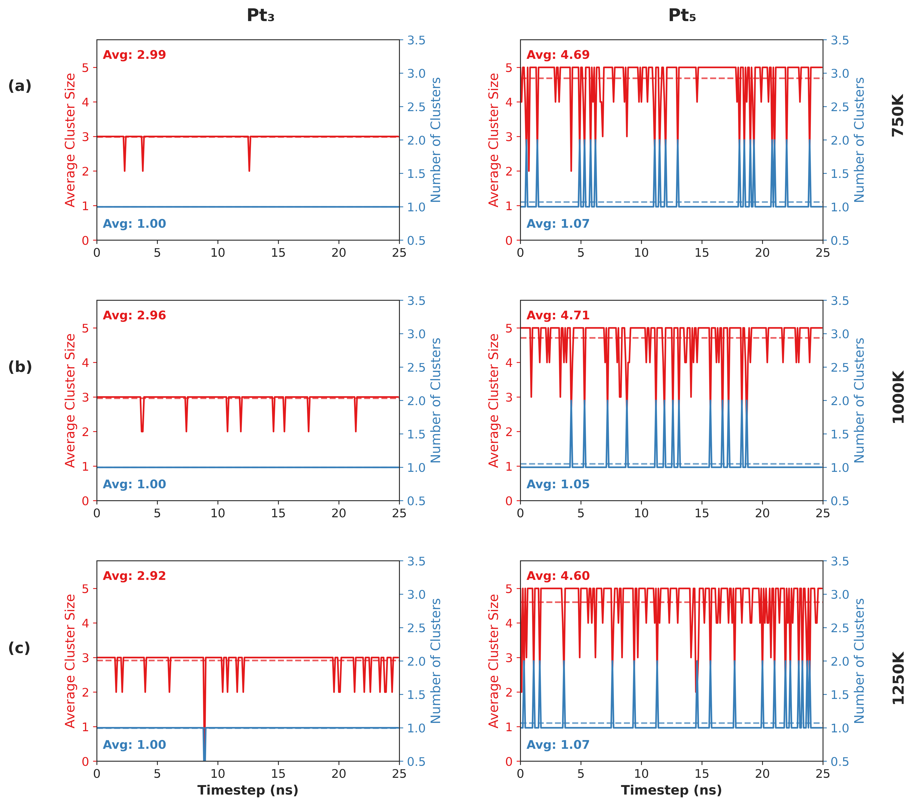
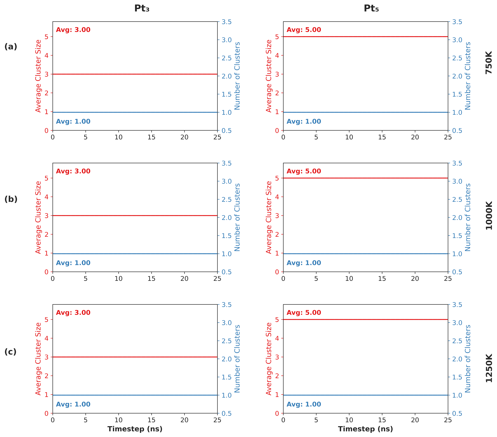

Clustering#
This case study re-analyses molecular dynamics simulation data from Heard et al. [1], investigating platinum clusters (Pt₃, Pt₅) migration within CHA zeolite. The original work used custom reactive neural network potentials to perform ~25 ns simulations at elevated temperatures (750 K, 1000 K, 1250 K). We apply CRISP’s clustering module using DBSCAN clustering.
DBSCAN Parameter Details#
DBSCAN requires two parameters: distance cutoff (ε) and minimum atoms per cluster (min_samples). We set min_samples = 2 atoms. For distance thresholds, we selected values based on Pt–Pt radial distribution functions showing sharp peaks at 2.46 Å. This justifies our primary threshold ε = 2.6 Å (first coordination shell) and secondary threshold ε = 3.0 Å (looser criterion).
Single Frame Analysis#
from CRISP.data_analysis.clustering import analyze_frame
import os
# Parameters
traj_file = "./CHA/Pt5/CHA_pt5_t1250.traj"
indices_file = "./CHA_Data_Analysis/Pt5/indices_new/Pt_indices.npy"
threshold = 2.6
min_samples = 2
frame_index = 8100
# Initialize analyzer
analyzer = analyze_frame(
traj_path=traj_file,
atom_indices=indices_file,
threshold=threshold,
min_samples=min_samples,
custom_frame_index=frame_index
)
# Run analysis
result = analyzer.analyze_structure(
save_html_path="clustering_results/frame8100_clusters.html",
output_dir="clustering_results"
)
Trajectory Analysis#
from CRISP.data_analysis.clustering import analyze_trajectory, save_analysis_results, plot_analysis_results
# Parameters
temperatures = [750, 1000, 1250]
pt_cases = ["Pt3", "Pt5"]
threshold = 3.0
min_samples = 2
skip_frames = 100
for temp in temperatures:
for pt in pt_cases:
traj_file = f"./CHA/{pt}/CHA_{pt.lower()}_t{temp}.traj"
indices_file = f"./CHA_Data_Analysis/{pt}/indices_new/Pt_indices.npy"
# Run analysis
analysis_results = analyze_trajectory(
traj_path=traj_file,
indices_path=indices_file,
threshold=threshold,
min_samples=min_samples,
frame_skip=skip_frames,
output_dir=f"{pt.lower()}_{temp}K_analysis",
save_html_visualizations=True
)
# Save and plot results
pickle_file = save_analysis_results(analysis_results, output_dir, prefix)
plot_analysis_results(pickle_file, output_dir)
Results#
Pt₃ Clusters: - ε = 2.6 Å: High stability, predominantly single cluster (~1.0), average size ~3.0. Rare fragmentation into Pt₂ + Pt₁, more frequent at higher temperatures. - ε = 3.0 Å: Even more stable, remains single entity throughout simulation.
Pt₅ Clusters: - ε = 2.6 Å: Significant instability, frequent fragmentation. Average size drops below 5.0, indicating dissociation into smaller fragments (Pt₄+Pt₁, Pt₃+Pt₂). - ε = 3.0 Å: Remains as single cluster across all temperatures.
Visualization:
 {kind=link}
{kind=link}
Summary#
The dual-threshold approach reveals different cluster dynamics: ε = 3.0 Å shows both clusters as cohesive entities, while ε = 2.6 Å reveals internal bond dynamics. Pt₃ maintains rigid trimer structure; Pt₅ undergoes frequent rearrangements and fragmentation. This demonstrates CRISP’s capability to reveal cluster behavior at different connectivity definitions.